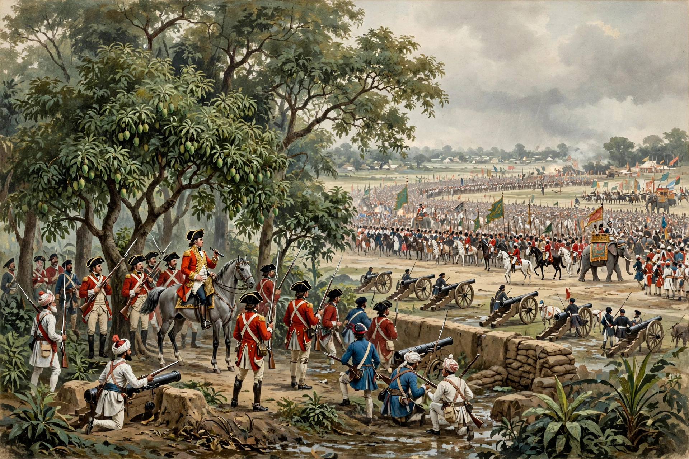

| Battle of Plassey | ||
|---|---|---|
| Part of the Seven Years' War and the Carnatic Wars | ||
| Date | 23 June 1757 | |
| Location | Palashi (Plassey), Bengal, on the Bhagirathi River (modern West Bengal, India) | |
| Result | Decisive British East India Company victory Company rule established in Bengal | |
| Belligerents | ||
| British East India Company | Nawab of Bengal and French allies | |
| Commanders and leaders | ||
| Robert Clive | Siraj ud-Daulah; Mir Jafar (defected); Mir Madan † | |
| Strength | c. 3,000 (750 Europeans, 2,100 sepoys, 8–10 guns) | c. 35,000–50,000 (incl. 15,000 cavalry), 53 guns |
| Casualties and losses | 22 killed, 50 wounded | c. 500 killed and wounded |

The Battle of Plassey was a decisive victory of the British East India Company, under Robert Clive, over the Nawab of Bengal Siraj ud-Daulah and his French allies on 23 June 1757. The battle was won as much by conspiracy as by combat: Mir Jafar, the Nawab's commander-in-chief, had been bribed to defect, and most of the Bengali army stood aside. Plassey installed a puppet nawab, gave the Company the revenues of India's richest province, and is conventionally regarded as the beginning of British rule in India.
Siraj ud-Daulah, succeeding as Nawab of Bengal in 1756, resented the Company's fortification of Calcutta and its abuse of trade privileges; he seized Calcutta in June 1756 (the "Black Hole of Calcutta" episode followed). Clive and Admiral Watson retook the city in January 1757 and captured the French settlement of Chandannagar, and Clive then turned to removing the Nawab himself.
The Company's agent William Watts negotiated a secret treaty with Mir Jafar, the Nawab's disaffected paymaster-general, promising him the throne in return for standing aside in battle, and with the great Jagat Seth banking house. The conspiracy very nearly unravelled — the intermediary Omichund had to be deceived with a forged duplicate treaty signed by Watson (whose signature was forged), an episode later criticised in Parliament.
On 23 June, in monsoon rain, Clive's force of about 3,000 faced perhaps 50,000 men and 53 guns drawn up in a great arc around the mango grove at Plassey. An artillery duel opened the day; a midday downpour soaked the Nawab's powder while the Company kept its own dry under tarpaulins. The Nawab's loyal general Mir Madan was killed by a cannonball; Siraj, unnerved, took the advice of traitors to withdraw the army, fled the field on a camel, and the day collapsed into a rout. Company losses were barely seventy men.
Mir Jafar was installed as Nawab and paid the Company and its officers enormous compensation — Clive's personal share exceeded £200,000 — beginning the systematic extraction of Bengal's wealth. Siraj was captured and executed within days. The Company's dominance was confirmed at Buxar in 1764; in 1765 it obtained the diwani (revenue rights) of Bengal, Bihar and Orissa from the Mughal emperor.
Harvey, Robert, Clive: The Life and Death of a British Emperor (1998); Chaudhury, Sushil, From Prosperity to Decline: Eighteenth Century Bengal.